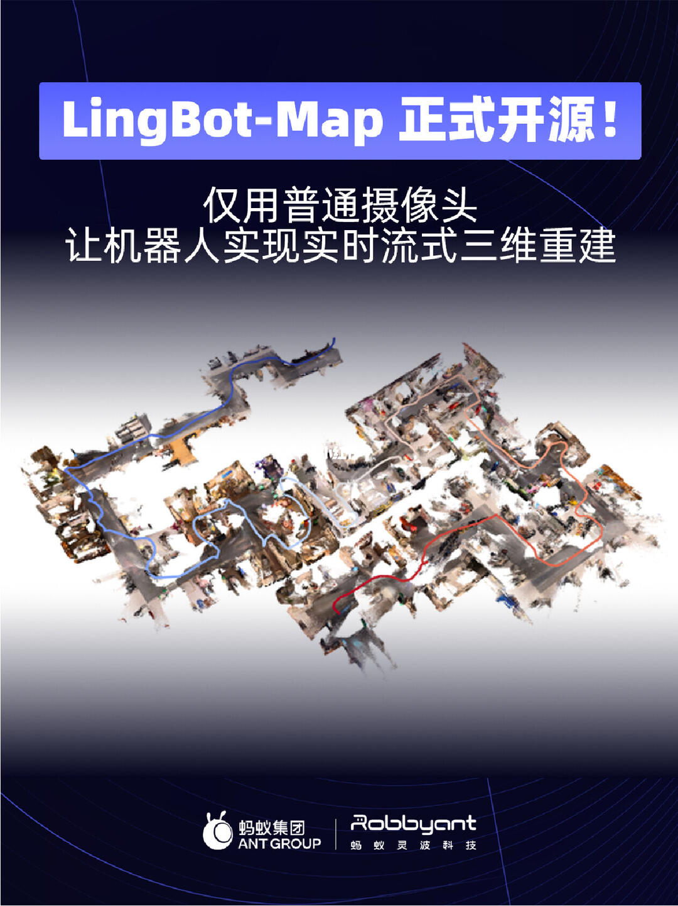
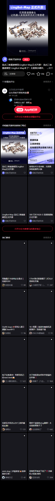

流式三维重建模型LingBot-Map正式开源！
📝 内容摘要
课题名称：
LingBot-Map：面向实时空间感知的流式三维重建模型研究背景与痛点：
传统三维重建依赖多视角图像离线处理、深度传感器或激光雷达等昂贵硬件，无法满足机器人、自动驾驶等场景对实时空间感知的需求。现有方案在算力、延迟和硬件成本上存在瓶颈，缺乏仅靠普通RGB摄像头即可实现实时三维重建的轻量化方案。解决方案：
蚂蚁灵波科技发布并开源 LingBot-Map——一个流式三维重建模型，仅需一颗普通 RGB 摄像头即可在视频采集过程中实时完成相机位姿估计与场景三维结构重建。项目已在 GitHub 开源，提供完整代码和文档。科学与工程价值：
填补了实时空间感知领域的关键技术空白，为机器人导航、自动驾驶环境理解、增强现实等场景提供低门槛、高时效的三维重建能力。开源策略有望推动社区在流式重建方向上的加速发展。ℹ️ 关键信息
ℹ️GitHub 开源地址：https://github.com/Robbyant/lingbot-map
ℹ️项目主页：https://technology.robbyant.com/lingbot-map
ℹ️发表时间：2026年4月18日
🖼️ 图集



📷 截图存档

☠️ 全文截图